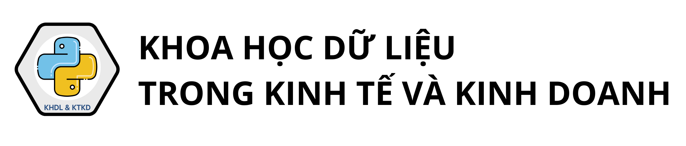

Chương 3: Khung phương pháp luận trong xây dựng mô hình#
Giới thiệu chung về xây dựng mô hình#
Xây dựng mô hình là bước then chốt trong quy trình phân tích dữ liệu, nhằm thiết lập và lượng hóa mối quan hệ giữa các biến độc lập trong tập dữ liệu với biến mục tiêu. Đây được xem là kết quả đầu ra cốt lõi của toàn bộ quá trình phân tích.
Quá trình xây dựng mô hình được triển khai dựa trên các nguyên lý toán học và thống kê, đòi hỏi người phân tích không chỉ hiểu rõ cấu trúc dữ liệu mà còn cần có nền tảng vững chắc về xác suất, suy luận thống kê và tư duy định lượng. Những hiểu biết này là cơ sở để lựa chọn mô hình phù hợp, ước lượng chính xác và đánh giá hiệu quả mô hình một cách khoa học.
Lịch sử hình thành của các mô hình học máy#
Mặc dù thuật ngữ xây dựng mô hình trên dữ liệu, hay được gọi một cách kỹ thuật hơn là các mô hình học máy, còn khá mới mẻ, nhưng những khái niệm nền tảng cho lĩnh vực này đã được phát triển từ lâu.
Vào đầu thế kỷ 19, phương pháp bình phương nhỏ nhất đã được phát triển và áp dụng để ước lượng các mô hình hồi quy tuyến tính. Mô hình này lần đầu tiên được áp dụng và cho kết quả thành công trong các vấn đề liên quan đến thiên văn học.
Vào đầu thế kỷ 20, mô hình hồi quy tuyến tính được sử dụng để dự đoán các giá trị định lượng, chẳng hạn như mức lương của một cá nhân hoặc để dự đoán các giá trị định tính, chẳng hạn như bệnh nhân sống hay chết, hay thị trường chứng khoán tăng hay giảm.
Vào những năm 1940, nhiều tác giả đã đưa ra một cách tiếp cận khác, đó là hồi quy logistic. Vào đầu những năm 1970, thuật ngữ mô hình tuyến tính tổng quát đã được phát triển để mô tả toàn bộ lớp phương pháp học thống kê bao gồm cả hồi quy tuyến tính và hồi quy logistic như các trường hợp đặc biệt.
Vào cuối những năm 1970, nhiều kỹ thuật xây dựng mô hình trên dữ liệu đã xuất hiện. Tuy nhiên, các mô hình này chỉ xoay quanh các phương pháp tuyến tính vì việc tạo ra các mối quan hệ phi tuyến tính rất khó khăn về mặt tính toán.
Đến những năm 1980, sự phát triển của máy tính điện tử đã hỗ trợ tích cực về mặt tính toán cho các phương pháp phi tuyến tính. Các mô hình phi tuyến được giới thiệu vào đầu những năm 1980 bao gồm mô hình cây quyết định và mô hình cộng tính tổng quát. Những năm cuối thập niên 1980 và đầu thập niên 1990, mô hình mạng nơ-ron được giới thiệu đến cộng đồng nghiên cứu nhưng chưa nhận được nhiều sự quan tâm vì dữ liệu chưa đủ phong phú và sự phổ biến của các mô hình học máy khác.
{kind=link}
Fig. 3 Các bước trong một quy trình ứng dụng Khoa học dữ liệu để giải quyết vấn đề#
Giai đoạn cuối thế kỷ XX và đầu thế kỷ XXI là giai đoạn chiếm ưu thế hoàn toàn của các mô hình học máy rừng ngẫu nhiên và thuật toán học tăng cường. Thuật toán học tăng cường với các biến thể như XGBoost hay LightGBM chiến thắng trong hầu hết các cuộc thi về khoa học dữ liệu.
Từ năm 2010, với sự bùng nổ của các thiết bị thông minh và kết nối internet, dữ liệu trở nên phong phú và đa dạng hơn cũng là thời điểm quay trở lại của mô hình mạng nơ-ron, hay còn được gọi với tên gọi khác là mô hình mạng học sâu (deep learning). Mô hình mạng học sâu vượt trội hoàn toàn các mô hình học máy thông thường khi làm việc với dữ liệu kiểu hình ảnh, video, ngôn ngữ tự nhiên bao gồm cả văn bản và giọng nói.
Sự kiện đánh dấu sự phát triển vượt bậc của các mô hình mạng học sâu là sự ra đời của ChatGPT vào cuối năm 2022, một mô hình ngôn ngữ lớn cho phép người dùng tương tác, hỏi đáp và trò chuyện một cách hoàn toàn tự nhiên theo định hướng của người sử dụng như phong cách, mức độ chi tiết, hình thức ngôn ngữ. ChatGPT nhanh chóng đạt đến 100 triệu người dùng sau hơn hai tháng phát hành và giúp cho công ty phát hành OpenAI được định giá khoảng 30 tỷ USD. Cho đến thời điểm cuối năm 2024 khi nhóm tác giả bắt đầu viết cuốn sách này, ChatGPT đã được cập nhật đến phiên bản 4.0.
Tại sao cần xây dựng mô hình?#
Việc sử dụng dữ liệu để hỗ trợ ra quyết định trong kinh tế và kinh doanh, thay vì chỉ dựa trên kinh nghiệm thuần túy, không chỉ giúp các nhà quản lý có cái nhìn toàn diện hơn về tình hình kinh doanh mà còn giúp họ đưa ra những quyết định khách quan, thông minh và hiệu quả hơn.
Để minh họa ứng dụng của xây dựng mô hình trên dữ liệu trong lĩnh vực kinh tế và kinh doanh, chúng tôi thảo luận ngắn gọn về dữ liệu từ một chiến dịch quảng cáo của một công ty thu thập được từ 55 cửa hàng trên toàn quốc. Dữ liệu bao gồm thông tin về doanh thu bán sản phẩm và chi phí công ty đã chi cho ba phương thức quảng cáo là quảng cáo qua truyền hình, quảng cáo qua các nền tảng mạng xã hội, và quảng cáo bằng hình thức phát tờ rơi. Mối liên hệ của chi phí cho mỗi phương thức quảng cáo đến doanh thu từ bán sản phẩm được mô tả trong hình
import pandas as pd
import numpy as np
import seaborn as sns
import matplotlib.pyplot as plt
path = 'https://raw.githubusercontent.com/nguyenquanghuy85/Khdl-ktkd-python/refs/heads/main/Sales%20dataset.csv'
df = pd.read_csv(path, index_col=0, parse_dates=True)
fig = plt.figure(figsize=(9, 3))
ax1 = fig.add_subplot(1, 3, 1)
ax1 = sns.regplot(x="TV", y="Sales", data= df)
ax2 = fig.add_subplot(1, 3, 2)
ax2 = sns.regplot(y="Sales", x="Social_Media", data= df)
ax3 = fig.add_subplot(1, 3, 3)
ax3 = sns.regplot(y="Sales", x="Flyer", data= df)
plt.tight_layout() # ✅ tránh chồng chữ trục
plt.show()
C:\Users\AD\AppData\Local\Temp\ipykernel_15520\279344144.py:7: UserWarning: Could not infer format, so each element will be parsed individually, falling back to `dateutil`. To ensure parsing is consistent and as-expected, please specify a format.
df = pd.read_csv(path, index_col=0, parse_dates=True)
fig = plt.figure(figsize=(9, 3))
ax1 = fig.add_subplot(1, 3, 1)
ax1 = sns.regplot(x="TV", y="Sales", data= df)
ax2 = fig.add_subplot(1, 3, 2)
ax2 = sns.regplot(x="Sales", y="Social_Media", data= df)
ax3 = fig.add_subplot(1, 3, 3)
ax3 = sns.regplot(x="Social_Media", y="TV", data= df)
plt.tight_layout() # ✅ tránh chồng chữ trục
plt.show()
Từ @fig-intro001 có thể đưa ra nhận định khá chắc chắn là chi tiền cho quảng cáo có ý nghĩa trong việc tăng doanh thu bán sản phẩm. Có thể thấy trong các đồ thị ở hàng phía trên rằng có mối liên hệ cùng chiều giữa chi phí chi cho các hình thức quảng cáo đến doanh thu bán sản phẩm. Mối liên hệ này là phù hợp với logic nói chung về quảng cáo sản phẩm: khi công ty chi tiền cho quảng cáo, nhiều khách hàng sẽ có cơ hội tiếp cận về sản phẩm hơn, làm tăng số lượng người mua sản phẩm và tăng doanh thu cho các cửa hàng.
Tuy nhiên, vẫn còn rất nhiều câu hỏi cần giải đáp từ đối với các nhà quản lý:
Mối liên hệ giữa ngân sách chi cho quảng cáo và doanh thu nếu tồn tại thì mạnh đến mức nào?
Phương tiện truyền thông nào góp phần tăng doanh thu bán hàng? Cả ba phương tiện truyền thông qua Tivi, mạng xã hội và phát tờ rơi có đóng góp vào doanh thu bán hàng hay chỉ một hoặc hai phương tiện quảng cáo có đóng góp?
Chúng ta có thể ước tính chính xác tác động của chi phí từng phương tiện quảng cáo đến doanh thu bán hàng như thế nào? Với cùng một mức chi cho quảng cáo trên một phương tiện cụ thể, doanh thu bán hàng sẽ tăng bao nhiêu? Chúng ta có thể dự đoán mức tăng này chính xác đến mức nào?
Mối liên hệ hay sự tác động của chi phí cho từng hình thức quảng cáo đến doanh thu bán hàng có tuyến tính không? Nếu không, liệu có phương pháp biến đổi như thế nào để mối liên hệ vẫn là tuyến tính?
Có sự tác động qua lại giữa các chi phí cho các phương tiện quảng cáo không? Chẳng hạn như nên chi đồng thời 10 triệu đồng cho quảng cáo trên mạng xã hội và 10 triệu đồng cho quảng cáo tờ rơi liệu có mang lại doanh thu cao hơn việc phân bổ 20 triệu cho riêng từng hình thức?
Để trả lời các câu hỏi kể trên, nhà quản lý cần xây dựng một mô hình phản ánh tác động của các chi phí cho quảng cáo lên doanh thu bán hàng. Về bản chất, mô hình cần xây dựng là một hàm số mô tả mối liên hệ giữa chi phí quảng cáo và doanh thu bán sản phẩm, tạm gọi là hàm \(f\) như sau:
với \(\epsilon\) là sai số trong mô hình mà không thể giải thích được bằng dữ liệu. Nói cách khác, \(\epsilon\) đại diện cho ảnh hưởng của các yếu tố có thể có tác động đến doanh thu nhưng không liên quan đến 3 loại hình quảng cáo trên.
Trong xuyên suốt cuốn sách, nếu không có giả thiết bổ sung, chúng tôi luôn mặc định là sai số có trung bình bằng 0 và phương sai là một hằng số.
Trong (1), biến Sales được gọi là biến phụ thuộc, biến phụ thuộc, hoặc biến đầu ra, trong khi các biến TV, SocialMedia, và Flyer được gọi là các biến giải thích, biến độc lập, hoặc biến đầu vào.
Trong cuốn sách này chúng tôi sẽ sử dụng cặp khái niệm biến phụ thuộc - biến giải thích và biến phụ thuộc - biến độc lập thay thế cho nhau tùy vào từng ngữ cảnh của mô hình.
Khi thảo luận về các mô hình và không đề cập đến một dữ liệu cụ thể, chúng tôi sẽ sử dụng ký hiệu \(Y\) để mô tả biến phụ thuộc và \(\textbf{X} = (X_1, X_2, \cdots, X_p)\) để mô tả véc-tơ các biến độc lập. Một cách tổng quát, chúng ta cần xác định mô hình trên dữ liệu, được gọi tắt là \(f\), sao cho
với \(\epsilon\) là sai số độc lập với biến giải thích \(\textbf{X}\).
Hàm \(f\) trong công thức trên là một hàm số xác định nhưng chưa biết. Mục tiêu quan trọng nhất của những người xây dựng mô hình là ước lượng hàm \(f\). Tuy nhiên, tất cả thông tin mà người xây dựng mô hình có được chỉ là các giá trị quan sát được của các biến độc lập và biến phụ thuộc tương ứng, mà không có bất kỳ gợi ý nào về dạng của hàm \(f\). Một ước lượng hàm \(f\), thường được ký hiệu là \(\hat{f}\), có phải là một xấp xỉ tốt cho hàm \(f\) hay không hoàn toàn phụ thuộc vào kinh nghiệm và kỹ năng của người xây dựng mô hình.
Trong phần tiếp theo của cuốn sách chúng tôi sẽ thảo luận về những cân nhắc mà người xây dựng mô hình cần phải đặt ra trước khi tiến hành ước lượng hàm \(f\).